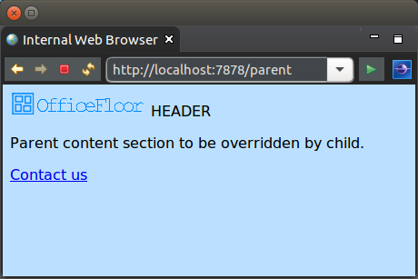
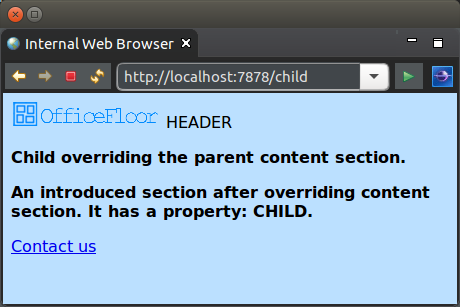
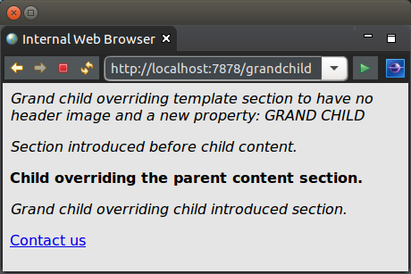

This tutorial demonstrates the inheritance of both HTML and logic for templates.
The following are the example pages for this tutorial. The parent, child and grand child pages inherit from each other as their name suggests.
For the parent that does not inherit from a template, it is just a normal template. It however does specify sections for overriding when inherited from. The HTML for the parent page is as follows:
<html>
<head>
<link href="./css/Site.css" rel="stylesheet" type="text/css" />
</head>
<body>
<p><img width="150em" src="http://www.officefloor.net/images/OfficeFloorBannerImage.png" /> ${text}</p>
<!-- {content} -->
<p>Parent content section to be overridden by child.</p>
<!-- {footer} -->
<p><a href="#{contact}">Contact us</a></p>
</html>
</body>
And the logic for the page is as follows:
public class ParentLogic {
@Data
public static class HeaderValues {
private final String text;
}
public HeaderValues getTemplateData() {
return new HeaderValues("HEADER");
}
}
When rendered, the page results in the following:
<html> <head> <link href="./css/Site.css" rel="stylesheet" type="text/css" /> </head> <body> <p><img width="150em" src="http://www.officefloor.net/images/OfficeFloorBannerImage.png" /> HEADER</p> <p>Parent content section to be overridden by child.</p> <p><a href="/parent+contact">Contact us</a></p> </html> </body>
Template inheritance occurs by the child template overriding sections within the parent template. To specify which sections are being overridden by the child template, the child template prefixes the section name with ':'.
The child template may introduce further sections after the overriding section by not prefixing them with ':'. The introduced sections are included immediately after the overriding section but before the corresponding next section in the parent template.
To continue to allow the child template to be rendered in a web browser for easy editing, sections named '!' are ignored. These ignored sections allow including HTML tags for correctly rendering the child raw template content.
Note that the first section within the child template is also ignored.
The child template of this tutorial demonstrates overriding a section, introducing a section and ignoring sections.
The HTML for the child page is as follows:
<html>
<body>
<!-- {:content} -->
<p><b>Child overriding the parent content section.</b></p>
<!-- {introduced} -->
<p><b>An introduced section after overriding content section. It has a property: ${value}.</b></p>
<!-- {!} -->
</body>
</html>
The sections, have the following effect:
As the introduced section has a ${property}, it requires a corresponding data method in the logic class. The following is the logic class for the child template. Note that it extends the parent logic class to inherit the required data methods from the parent.
public class ChildLogic extends ParentLogic {
@Data
public static class IntroducedValues {
private final String value;
}
public IntroducedValues getIntroducedData() {
return new IntroducedValues("CHILD");
}
}
When rendered, the page results in the following:
<html> <head> <link href="./css/Site.css" rel="stylesheet" type="text/css" /> </head> <body> <p><img width="150em" src="http://www.officefloor.net/images/OfficeFloorBannerImage.png" /> HEADER</p> <p><b>Child overriding the parent content section.</b></p> <p><b>An introduced section after overriding content section. It has a property: CHILD.</b></p> <p><a href="/child+contact">Contact us</a></p> </html> </body>
The grand child template of this tutorial demonstrates overriding the first section, overriding an introduced section and overriding a data method.
The HTML for the grand child page is as follows:
<!-- {:template} -->
<html>
<head>
<link href="./css/Other.css" rel="stylesheet" type="text/css" />
</head>
<body>
<p><i>Grand child overriding template section to have no header image and a new property: ${other}</i></p>
<!-- {precontent} -->
<p><i>Section introduced before child content.</i></p>
<!-- {:introduced} -->
<p><i>Grand child overriding child introduced section.</i></p>
<!-- {!} -->
</body>
</html>
The sections, have the following effect:
The overriding of the first section also introduces a different property. This requires the corresponding data method to return a different type (one containing the new property rather than the old property). To enable overriding data methods of the parent and continue to abide by Java compiler rules, template inheritance for logic classes have methods override each other by name only (not by the entire method signature). This allows changing the method signature (e.g. adding an additional parameter) and then override the data method by name to return a different type.
In the case of this tutorial, the following logic class shows overriding the method by name. The additional parameter is only to create a different method signature to avoid Java compiler issues of returning a different type.
public class GrandChildLogic extends ParentLogic {
@Data
public static class AlternateHeaderValues {
private final String other;
}
public AlternateHeaderValues getTemplateData(HttpRequestState requestState) {
return new AlternateHeaderValues("GRAND CHILD");
}
}
When rendered, the page results in the following:
<html> <head> <link href="./css/Other.css" rel="stylesheet" type="text/css" /> </head> <body> <p><i>Grand child overriding template section to have no header image and a new property: GRAND CHILD</i></p> <p><i>Section introduced before child content.</i></p> <p><b>Child overriding the parent content section.</b></p> <p><i>Grand child overriding child introduced section.</i></p> <p><a href="/grandchild+contact">Contact us</a></p> </html> </body>
The next tutorial covers securing a page.